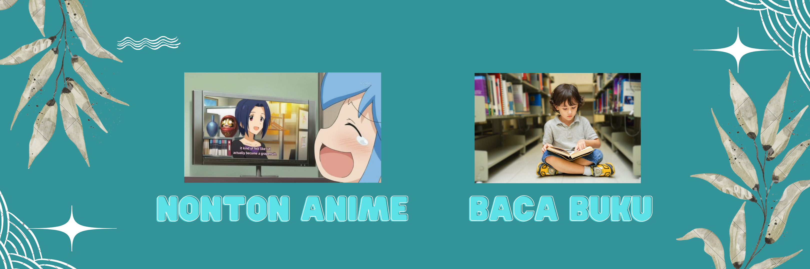

About Me
Hellooo...
Namaku Yudi Arrasyid, Aku memiliki pengalaman sebagai admin data dan business analyst.
Aku lulusan dari program Diploma 3 Teknik Elektronika dan saat ini sedang menempuh studi
lanjut untuk gelar Sarjana di bidang Teknik Informatika di Binus University. Aku sangat
tertarik dengan pemrograman, itulah mengapa aku memutuskan untuk melanjutkan kuliah dan
mendalami bidang ini.
Hobby

Hobi pertamaku adalah menonton anime karena bagiku anime adalah
jendela ilmu pengetahuan. Aku sering mendapatkan banyak pengetahuan
umum setelah menonton beberapa judul anime.
Hobi keduaku adalah membaca buku. Aku memiliki preferensi tertentu
dalam membaca, namun aku sangat suka membaca buku bertema self-improvement
seperti "Mindset", "Seni Menguasai Lawan Bicara", dan "Psikologi Keuangan".
Aku juga memiliki minat yang tinggi terhadap manajemen bisnis.
Contact